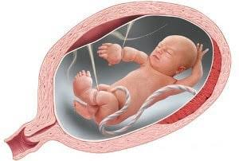

A brida amniótica ou banda amniótica é quanto pedaços da bolsa amniótica acabam se rompendo e formando uma especie de cordão que acaba se prendendo nos braços ou pernas do bebê, nasicamente o saco amniótico onde fica o bebê durante a gestação, possui duas camadas, uma interna e outra externa, em alguns casos devido algum trauma abdominal essa camada interna acaba se rompendo e formando ainda dentro da bolsa um cordão, com isso as vezes o bebê acaba por si próprio se enrolando nesse cordão, trazendo traumas para os seus próprios membros, pois esse cordão acaba prendendo o sangue do bebê e impedindo o desenvolvimento dessas partes.
A brida pode ocorrer principalmente nos membros inferiores e superiores, e pode ocasionar:
O diagnóstico pode vir por meio de ultrassonografias de rotina.
O tratamento da brida amniótica consiste na liberação das bandas que causam constrição nos membros do feto, geralmente através de cirurgia fetal endoscópica ou fetoscopia. O objetivo é restaurar o fluxo sanguíneo e permitir o desenvolvimento adequado do membro afetado. O tratamento pode ser realizado em diferentes idades gestacionais, dependendo do caso e da avaliação médica.